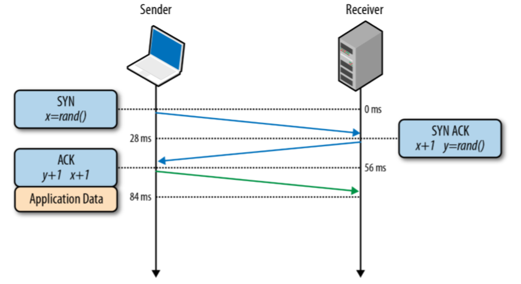
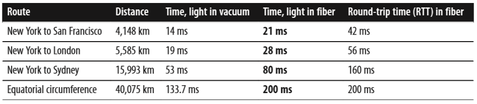
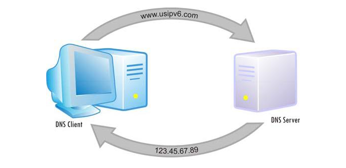
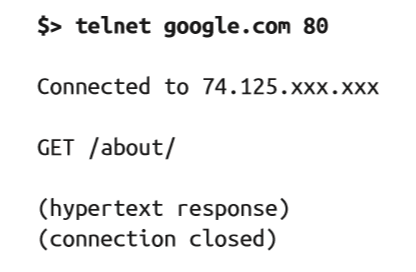
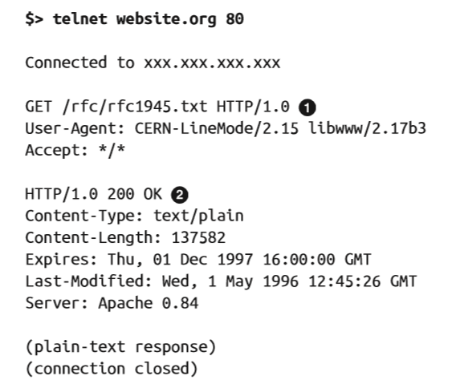
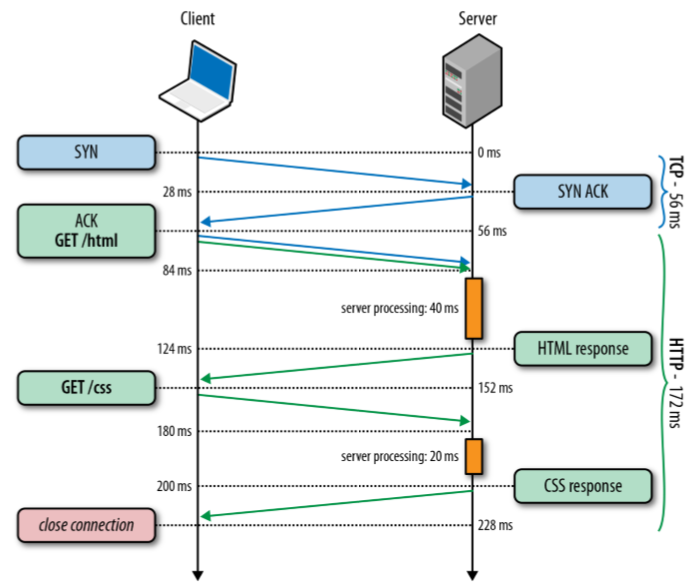
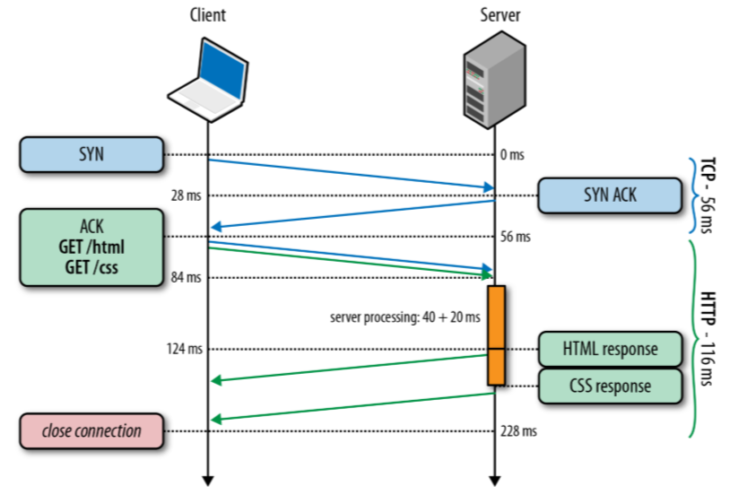
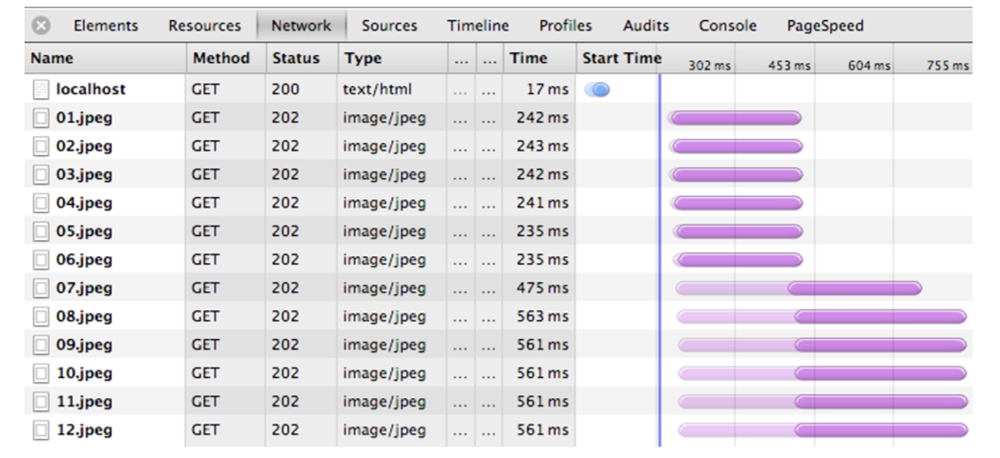
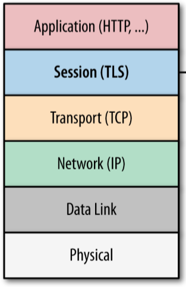

Basics of HTTP
CERN
90s, Creator of WWW
Sir Timothy John «Tim» Berners-Lee
Creator of URL, HTTP, HTML and whole WWW
Brief History
1970s - OSI (Open System Interconnection, finally standardized in 1984)

1970s - TCP/IP (standardized in 1982)

HTTP
- 1992 - HTTP/0.9
- 1996 - HTTP/1.0
- 1999 - HTTP/1.1
- 201? - HTTP 2.0 (draft version)
TCP/IP
Triple Handshake

Three-way handshake
Latency

RTT (round-trip time)
DNS (Domain Name System)
www.example.com -> 93.184.216.119
DNS Lookup
DNS Lookup Time

host.config file
"c:\Windows\System32\drivers\etc\hosts"DNS Statistics
chrome://dns/
chrome://net-internals/#dns
HTTP
The Hypertext Transfer Protocol (HTTP) is an application-level protocol for distributed, collaborative, hypermedia information systems.T. Berners-Lee, rfc2616


HTTP Evolution
HTTP 0.9
HTTP 1.0
HTTP 1.1

Connection: keep-alive
HTTP 1.0: Separate TCP connections
Keep-alive connection
HTTP Pipelining
Six-connection limit per origin
HTTP 1.1 Features
- Pull protocol
- Stateless
- Scaleable
- Simple
HTTP Request Headers
- Content-Length: number-of-bytes
- Referer: referer-URL
- User-Agent: browser-type
- Accept-Encoding: encoding-method-1, encoding-method-2, ...
- Cookie: cookie-name-1=cookie-value-1, cookie-name-2=cookie-value-2, ...
HTTP Response Headers
- Cache-Control: max-age=3600, public
- Content-Encoding:gzip
- Content-Type:text/html; charset: utf-8
- Content-Length: 10000
- Connection: Keep-Alive
Content-Encoding:gzip. Profit

HTTP Methods
- "OPTIONS"
- "GET"
- "HEAD"
- "POST"
- "PUT"
- "DELETE"
- "TRACE"
- "CONNECT"
POST
<html>
<body>
<form action="login" method="POST">
User Name: <input name="user" type="text" />
<input name="password" type="password" />
<input type="submit" />
</form>
</body>
</html>
Status Code Definitions
- "Informational 1xx"
- "Successful 2xx"
- "Redirection 3xx"
- "Client Error 4xx"
- "Server Error 5xx"
500 - Bad practices

500 - Best practices

404 - Bad practices

404 - Best practices


301 Moved Permanently
-
Request
"GET /index.php HTTP/1.1 Host: www.example.org" -
Response
"HTTP/1.1 301 Moved Permanently Location: http://www.example.org/index.html" - What is the most common usage of this status code?
Tip
https://facebook.com/ vs https://www.facebook.com/Answer
SEO optimization
Cookies

Cookies
- Session cookie
- Persistent cookie
- Secure cookie
Chrome Dev Tools - Cookies Tab

Ways to set cookies
-
Javascript
document.cookie -
Response
HTTP/1.1 200 OK Content-type: text/html Set-Cookie: name=value - Plugins, E.G Firefox Cookies Manager
-
Manually
C:\Users\<username>\AppData\Roaming\Microsoft\Windows\Cookies
Tip
Directly in HTML
Answer
Meta Tag
<head>
<meta http-equiv="set-cookie" content="name=;expires=; domain=;path=;secure">
</head>
Demo: vk.com analyze

Web servers

Session

Let's imagine...


How to protect the connection between client and server?
Tip 1
Use public/private keysTip 2

Answer
Third party needed - Certification Center
TLS(SSL) layer
REST

Web-Services
- 1998 - XML-RPC (Extensible Markup Language Remote Procedure Call)
- 1999 - SOAP (Simple Object Access Protocol)
- 2000 - REST (Representational State Transfer)
RPC-XML
Request
<?xml version="1.0"?>
<methodCall>
<methodName>examples.getStateName</methodName>
<params>
<param>
<value><i4>40</i4></value>
</param>
</params>
</methodCall>
<?xml version="1.0"?>
<methodResponse>
<params>
<param>
<value><string>South Dakota</string></value>
</param>
</params>
</methodResponse>
SOAP
Request
<soap:Envelope xmlns:soap="http://schemas.xmlsoap.org/soap/envelope/">
<soap:Body>
<getProductDetails xmlns="http://warehouse.example.com/ws">
<productID>12345</productID>
</getProductDetails>
</soap:Body>
</soap:Envelope>
<soap:Envelope xmlns:soap="http://schemas.xmlsoap.org/soap/envelope/">
<soap:Body>
<getProductDetailsResponse xmlns="http://warehouse.example.com/ws">
<getProductDetailsResult>
<productID>12345</productID>
<productName>Ñòàêàí ãðàíåíûé</productName>
<description>Ñòàêàí ãðàíåíûé. 250 ìë.</description>
<price>9.95</price>
<currency>
<code>840</code>
<alpha3>USD</alpha3>
<sign>$</sign>
<name>US dollar</name>
<accuracy>2</accuracy>
</currency>
<inStock>true</inStock>
</getProductDetailsResult>
</getProductDetailsResponse>
</soap:Body>
</soap:Envelope>
REST
Request
GET http://example.com/states/40 HTTP 1/1
Response
<state>
<name>South Dakota</name>
</state>
REST
- HTTP-based (GET, PUT, POST, DELETE)
- Client-server oriented
- Stateless
- Cacheable
REST vs SOAP

XML vs JSON


REST: Idempotent and safe methods
An idempotent HTTP method is a HTTP method that can be called many times without different outcomes
Safe methods are methods that can be cached, prefetched without any repercussions to the resource.
Network tools & analyzers
Most useful commands
-
ping www.ya.ru -
tracert www.ya.ru -
ipconfig (/all) -
netstat -an
Useful materials
HTTP Basics HTTP Pocket Reference Book TCP/IP